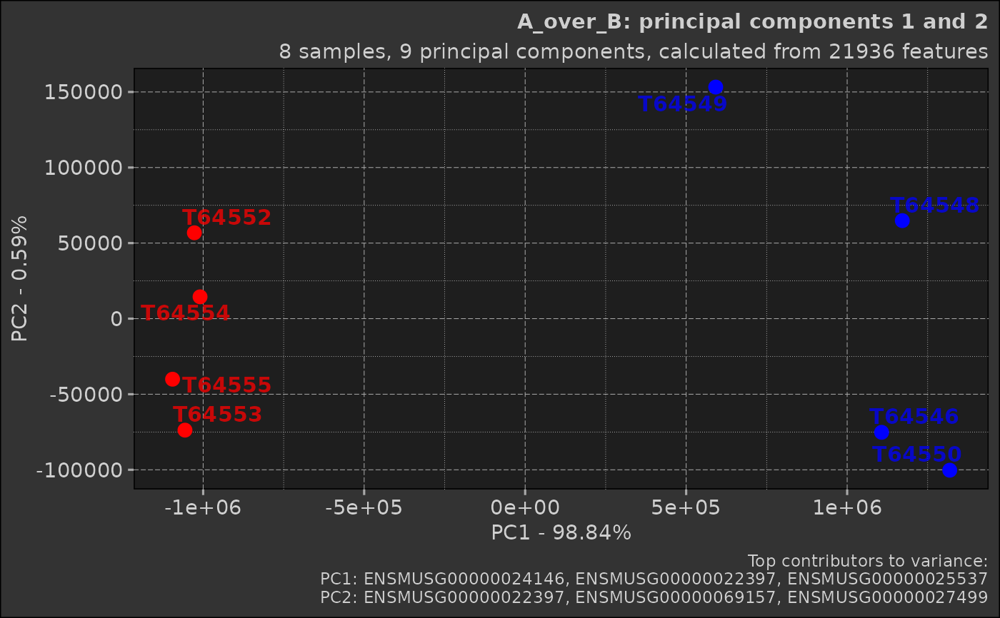

The `Pca` class implements Principal Component Analysis, a dimensionality reduction technique widely used in data analysis and visualisation. This class provides methods for performing PCA on a dataset, visualising the results, and interpreting the output.
Details
PCA is a powerful technique for analysing high-dimensional data, such as gene expression data in bioinformatics. It works by transforming the data into a new coordinate system where the axes (principal components) are ordered by the amount of variance they explain.
The PCA process involves several steps:
1. Standardisation: PCA begins with a dataset of n-dimensions (in the below demonstration, genes are dimensions and samples are observations). The data is standardised, transforming each dimension to have a mean of 0 and a standard deviation of 1.
2. Covariance Matrix Computation: A covariance matrix is computed. This matrix indicates the covariance (shared variance) between each pair of dimensions. The covariance between different dimensions is used to understand the correlation structure of the original dimensions.
3. Eigendecomposition: The covariance matrix is then decomposed into its eigenvectors and eigenvalues. Each eigenvector represents a principal component, which is a linear combination of the original dimensions. The associated eigenvalue represents the amount of variance explained by the principal component. The eigenvectors are ordered by their corresponding eigenvalues, so the first principal component (PC1) explains the most variance, followed by PC2, etc.
4. Selection of Principal Components: Depending on the goal of the analysis, some or all of the principal components can be selected for further analysis. The 'elbow method' is commonly used, where you plot the explained variance by each principal component and look for an 'elbow' in the plot as a cut-off point.
5. Interpretation: The 'top rotations' in the context of PCA refer to the features (genes) that contribute most to each principal component. The 'rotation' matrix from prcomp() gives the loadings of each feature onto each PC. By identifying features with large absolute loadings, we can understand what features drive the separation in the data along the principal components. In other words, the top rotations tell us which genes are most important for explaining the variance in our data along each PC.
This class provides methods for each step of the PCA process, from data preparation to visualisation of results. It's designed to work with any kind of high-dimensional numerical data, as long as the data is in a tabular format with features as rows and samples as columns. The first column must be named "feature" and contain the feature names.
Public fields
dataThe input data for PCA, typically a data.table with features as rows and samples as columns
comparisonAn optional Comparison object for group comparisons
prcomp_resultsResults from the stats::prcomp function, containing the raw PCA output
prcomp_refinedRefined PCA results, including percentage of variance explained by each PC
top_rotationsTop contributors (features) to each principal component
scatterThe scatter plot of the first two principal components
screeThe scree plot showing variance explained by each PC
Methods
Method prcomp()
Perform Principal Component Analysis on the data
Method print()
Print a summary of the PCA results
Method plot_scatter()
Generate a scatter plot of the first two principal components
Usage
Pca$plot_scatter(
point_default_colour = "grey",
point_size = 3,
point_alpha = 1,
point_labels = list(show = TRUE, size = 4, max_overlaps = 10, alpha = 0.75, font_face =
"bold"),
top_contributors = list(show = TRUE, truncate = 30),
title = if (!is.null(self$comparison))
stringr::str_interp("${self$comparison$comparison_name}: principal components 1 and 2")
else "Principal components 1 and 2",
subtitle =
stringr::str_interp("${nrow(self$prcomp_results$x)} samples, ${ncol(self$prcomp_results$rotation)} principal components, calculated from ${nrow(self$prcomp_results$rotation)} features"),
caption = if (top_contributors$show)
stringr::str_interp("Top contributors to variance:\nPC1: ${paste0(stringr::str_trunc(names(self$top_rotations$PC1), top_contributors$truncate), collapse = \", \")}\nPC2: ${paste0(stringr::str_trunc(names(self$top_rotations$PC2), top_contributors$truncate), collapse = \", \")}")
else NULL
)Arguments
point_default_colourDefault colour for points when no comparison is provided
point_sizeSize of the points in the scatter plot
point_alphaAlpha (transparency) of the points
point_labelsList of parameters for point labels
top_contributorsList of parameters for displaying top contributors
titleTitle of the plot
subtitleSubtitle of the plot
captionCaption of the plot
Examples
# Load required packages
box::use(dmplot[Pca, Comparison])
# Load example data
data(feature_counts, package = "dmplot")
# Prepare the data
data <- feature_counts[GeneBiotype == "protein_coding", ]
colnames(data)[1] <- "feature"
# Create a comparison table
comp_table <- data.frame(
group = c("A", "A", "A", "A", "B", "B", "B", "B"),
sample = c("T64552", "T64553", "T64554", "T64555", "T64546", "T64548", "T64549", "T64550")
)
# Create a Comparison object
comp <- Comparison$new(
comparison_name = "A_over_B",
group_order = c("B", "A"),
comparison_table = comp_table
)
#> A_over_B: deriving condition "control", "test" from group_order argument: control - B, test - A
# Create a Pca object
pca_obj <- Pca$new(data, comp)
# Perform PCA
pca_obj$prcomp()
# Access PCA results
pca_obj$data # View the input data
#> feature T64555 T64550 T64554 T64546 T64548 T64553 T64549
#> <char> <num> <num> <num> <num> <num> <num> <num>
#> 1: ENSMUSG00000051845 11 4 26 9 6 30 10
#> 2: ENSMUSG00000025374 366 1036 377 933 702 483 1103
#> 3: ENSMUSG00000025609 630 2005 729 1793 1788 587 1571
#> 4: ENSMUSG00000033608 1099 930 960 898 1045 1234 881
#> 5: ENSMUSG00000025916 1198 1179 1474 1227 1219 1302 1111
#> ---
#> 21932: ENSMUSG00000079777 0 0 0 0 0 0 0
#> 21933: ENSMUSG00000095325 0 1 0 0 0 0 1
#> 21934: ENSMUSG00000063958 0 1 0 0 0 0 0
#> 21935: ENSMUSG00000096294 0 0 1 0 0 2 0
#> 21936: ENSMUSG00000095261 0 0 2 0 0 0 0
#> T64552
#> <num>
#> 1: 22
#> 2: 298
#> 3: 1190
#> 4: 992
#> 5: 1224
#> ---
#> 21932: 0
#> 21933: 0
#> 21934: 0
#> 21935: 0
#> 21936: 0
pca_obj$prcomp_results # View the raw PCA results
#> Standard deviations (1, .., p=8):
#> [1] 1.138674e+06 8.773857e+04 6.518402e+04 4.366182e+04 2.366213e+04
#> [6] 2.021359e+04 1.856779e+04 5.074559e-10
#>
#> Rotation (n x k) = (21936 x 9):
#> feature PC1 PC2 PC3
#> <char> <num> <num> <num>
#> 1: ENSMUSG00000051845 -7.096769e-06 -3.435085e-06 -1.311560e-05
#> 2: ENSMUSG00000025374 2.507594e-04 2.327624e-04 -2.263580e-03
#> 3: ENSMUSG00000025609 4.829978e-04 5.629973e-04 -1.712018e-04
#> 4: ENSMUSG00000033608 -5.838886e-05 -4.247061e-04 4.967849e-04
#> 5: ENSMUSG00000025916 -4.793845e-05 -2.682115e-04 4.364476e-04
#> ---
#> 21932: ENSMUSG00000079777 0.000000e+00 0.000000e+00 0.000000e+00
#> 21933: ENSMUSG00000095325 2.104848e-07 9.823465e-07 -5.164060e-06
#> 21934: ENSMUSG00000063958 1.452822e-07 -1.861195e-06 -1.868383e-06
#> 21935: ENSMUSG00000096294 -3.440474e-07 -2.470131e-06 -1.668852e-06
#> 21936: ENSMUSG00000095261 -2.224891e-07 5.361425e-07 8.268138e-07
#> PC4 PC5 PC6 PC7 PC8
#> <num> <num> <num> <num> <num>
#> 1: 5.189112e-05 1.801555e-04 -1.200291e-04 -5.108678e-05 9.958967e-01
#> 2: -8.527113e-04 7.442109e-04 -1.801072e-04 1.408829e-03 1.440055e-02
#> 3: 3.257467e-03 -4.084275e-03 -2.342402e-04 -1.156612e-03 1.229453e-03
#> 4: -1.161698e-03 1.980618e-04 -3.013515e-03 -1.493341e-03 5.472309e-04
#> 5: 6.001607e-04 3.090540e-03 1.550082e-03 -9.226412e-04 -6.659177e-02
#> ---
#> 21932: 0.000000e+00 0.000000e+00 0.000000e+00 0.000000e+00 0.000000e+00
#> 21933: -1.229342e-06 -3.660716e-06 3.726451e-06 -7.625355e-06 -8.576584e-09
#> 21934: 8.114471e-07 -4.150045e-06 4.075928e-06 -1.056032e-05 -1.770769e-08
#> 21935: -2.191337e-06 2.016344e-05 -1.332807e-05 -9.622857e-06 -2.664305e-07
#> 21936: 3.340294e-06 1.866922e-05 2.224219e-05 -5.936117e-06 -9.170773e-08
pca_obj$prcomp_refined # View the refined PCA results
#> PC pct_var_explained T64555 T64550 T64554
#> <fctr> <num> <num> <num> <num>
#> 1: PC1 98.84 -1.095036e+06 1.318588e+06 -1.009661e+06
#> 2: PC2 0.59 -4.006736e+04 -1.002931e+05 1.444540e+04
#> 3: PC3 0.32 2.585091e+04 -5.557073e+04 1.229583e+04
#> 4: PC4 0.15 -6.332709e+04 1.082834e+04 2.228724e+04
#> 5: PC5 0.04 -3.031154e+04 -1.626517e+04 3.658489e+04
#> 6: PC6 0.03 1.610595e+04 1.165766e+04 3.180771e+04
#> 7: PC7 0.03 1.252223e+04 -2.548565e+04 -7.162936e+03
#> 8: PC8 0.00 -7.304681e-10 1.467666e-10 -7.570011e-10
#> T64546 T64548 T64553 T64549 T64552
#> <num> <num> <num> <num> <num>
#> 1: 1.106923e+06 1.171230e+06 -1.056464e+06 5.917810e+05 -1.027361e+06
#> 2: -7.521318e+04 6.485800e+04 -7.377593e+04 1.532282e+05 5.681796e+04
#> 3: 9.713139e+03 1.223412e+05 -3.096599e+04 -9.802232e+04 1.435798e+04
#> 4: 3.058937e+04 -2.366272e+04 -2.576475e+04 -2.723327e+04 7.628288e+04
#> 5: 1.055647e+04 4.748593e+03 2.122058e+04 1.917814e+03 -2.845164e+04
#> 6: -2.616935e+03 -9.385638e+03 -3.496382e+04 -9.995481e+02 -1.160537e+04
#> 7: 3.579439e+04 -1.243312e+04 -8.030147e+03 7.083070e+03 -2.287841e+03
#> 8: -5.251044e-10 -1.228349e-09 1.467524e-09 1.514077e-09 1.135242e-10
# Create visualisations
scree_plot <- pca_obj$plot_scree() # Generate a scree plot
scatter_plot <- pca_obj$plot_scatter() # Generate a scatter plot
# Print the scree plot
print(scree_plot)
# Print the scatter plot
print(scatter_plot)
